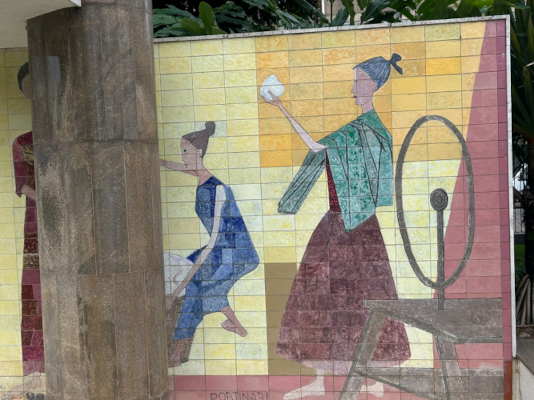
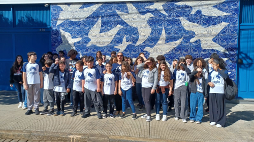

A PRAÇA RUI BARBOSA
[8° ano]
O trabalho do 8° ano que consiste em o modernismo da praça Rui Barbosa. Descubra muitas curiosidades sobre ela e sua história.

AS FIANDEIRAS
[7° ano]
O trabalho do 7° que apresenta o painel "As Fiandeiras" trazendo curiosidades e história sobre o monumento e o que ele representa ao modernismo de Cataguases.

OS PÁSSAROS e mais
[6° ano]
O trabalho do 6° ano fala sobre o painel "Os pássaros" e o Educandário onde teve muita história e umas das estrutas importantes para o modernismo de Cataguases.

COLÉGIO CATAGUASES
[9° ano]
O trabalho do 9° mostra o Colégio Cataguases, sua história, curiosidades e seu impacto a Cataguases. Ele representa muito sobre o modernismo de Cataguases.
VEJA NOSSA GALERIA
Veja algumas fotos tiradas durante a criação dos trabalho para ver mais sobre o modernismo de Cataguases e acompanhar um pouco sobre os bastidores do projeto.